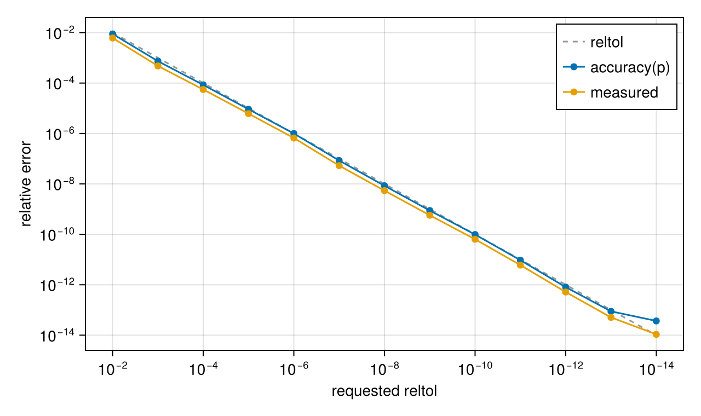
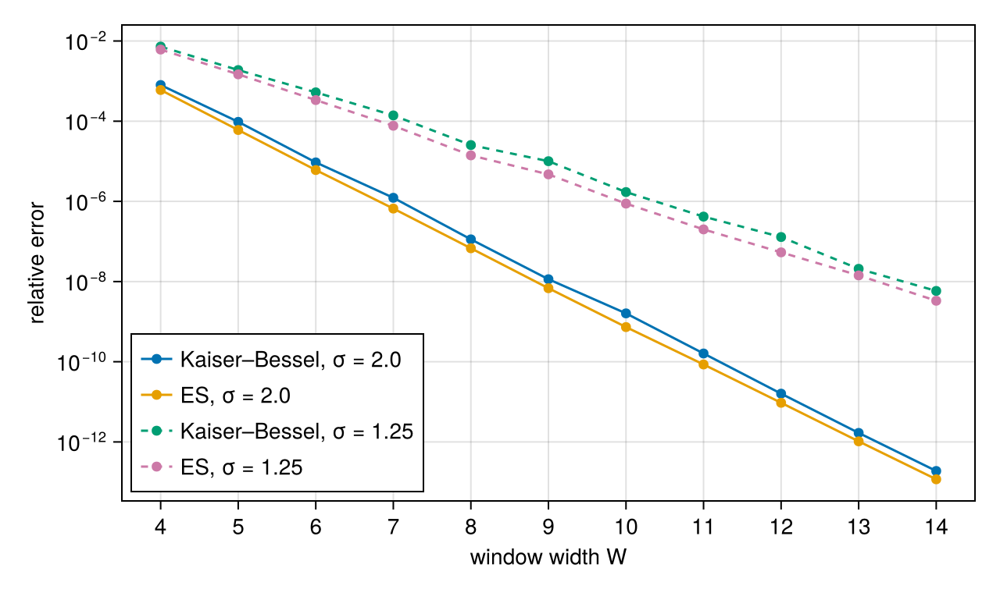

Accuracy and Parameters
The NFFT approximates the NDFT; its error depends on the window function $\varphi$, the window width $W$ (in grid points) and the oversampling factor $\sigma$ (see Mathematical Background). NFFT.jl lets you state the error you need and chooses these three for you.
From reltol to parameters
reltol is the requested relative error in the $\ell^2$ norm, for random data. For each combination of window family, $W$ and $\sigma$ NFFT.jl carries a table with the optimised shape parameter of the window and the error it reaches. From all entries whose predicted error is below reltol, the plan takes the one with the lowest predicted run time. The cost model weighs the resampling ($J W^D$) against the FFT ($\sigma^D |\bm{N}| \log$), so the choice depends on the dimension and on the ratio of nodes to grid size.
using NFFT, LinearAlgebra, Random, CairoMakie
Random.seed!(1)
N = (48, 48)
k = rand(2, 4000) .- 0.5
f = randn(ComplexF64, N)
exact = NDFTPlan(k, N) * f
relerr(p) = norm(p * f - exact) / norm(exact)
p = plan_nfft(k, N; reltol=1e-6)NFFTPlan{Float64} of size (48, 48) along dims 1:2 at 4000 nodes: ExpSemicircle window, W = 7, σ = 2.0, predicted error 9.97192883345134e-7The plan shows what it chose; NFFT.parameters returns the same as a named tuple:
NFFT.parameters(p)(window = ExpSemicircle(), W = 7, σ = 2.0)Over a range of tolerances, the measured error stays below the requested one, and accuracy(p) predicts it well:
tols = [10.0^-i for i in 2:14]
plans = [plan_nfft(k, N; reltol=t) for t in tols]
measured = relerr.(plans)
predicted = accuracy.(plans)
fig = Figure(size=(640, 380))
ax = Axis(fig[1, 1]; xscale=log10, yscale=log10, xreversed=true,
xlabel="requested reltol", ylabel="relative error",
xticks=LogTicks(-14:2:-2), yticks=LogTicks(-14:2:-2))
lines!(ax, tols, tols; color=:gray60, linestyle=:dash, label="reltol")
scatterlines!(ax, tols, predicted; label="accuracy(p)")
scatterlines!(ax, tols, measured; label="measured")
axislegend(ax; position=:rt)
fig
The chosen widths and oversampling factors:
[(reltol=t, W=NFFT.parameters(q).W, σ=NFFT.parameters(q).σ) for (t, q) in zip(tols, plans)]13-element Vector{@NamedTuple{reltol::Float64, W::Int64, σ::Float64}}:
(reltol = 0.010000000000000002, W = 4, σ = 1.25)
(reltol = 0.001, W = 5, σ = 1.4)
(reltol = 0.0001, W = 6, σ = 1.45)
(reltol = 1.0e-5, W = 7, σ = 1.5)
(reltol = 1.0e-6, W = 7, σ = 2.0)
(reltol = 1.0000000000000001e-7, W = 8, σ = 2.05)
(reltol = 1.0e-8, W = 9, σ = 2.05)
(reltol = 1.0e-9, W = 10, σ = 2.05)
(reltol = 1.0e-10, W = 11, σ = 2.05)
(reltol = 1.0e-11, W = 12, σ = 2.2)
(reltol = 1.0000000000000002e-12, W = 13, σ = 2.2)
(reltol = 1.0e-13, W = 14, σ = 2.2)
(reltol = 1.0e-14, W = 15, σ = 2.5)Below about $10^{-14}$ rounding errors dominate in double precision; in single precision the floor is about $10^{-6}$. A reltol below the floor gives the most accurate plan available.
Window families
Two families have parameter tables:
KaiserBessel: the continuous Kaiser–Bessel window,ExpSemicircle: the "exponential of semicircle" window $\exp(\beta((1-(2z/W)^2)^{e_0} - 1))$.
The default window = :auto lets both compete. How the error falls with the width, at $\sigma = 2$ and $\sigma = 1.25$:
Ws = 4:14
fig = Figure(size=(640, 380))
ax = Axis(fig[1, 1]; yscale=log10, xlabel="window width W", ylabel="relative error",
xticks=Ws, yticks=LogTicks(-14:2:-2))
for (σ, style) in ((2.0, :solid), (1.25, :dash)), (win, name) in ((KaiserBessel(), "Kaiser–Bessel"),
(ExpSemicircle(), "ES"))
errs = [relerr(plan_nfft(k, N; window=win, W, σ)) for W in Ws]
scatterlines!(ax, Ws, errs; linestyle=style, label="$name, σ = $σ")
end
axislegend(ax; position=:lb)
fig
A smaller $\sigma$ needs a wider window for the same error, but its FFT is cheaper; which is faster overall depends on $D$ and on the number of nodes. This is the trade-off the automatic choice makes.
To set window, width or oversampling yourself, see Choosing Parameters; all plan options are listed in the API.
This page was generated using Literate.jl.